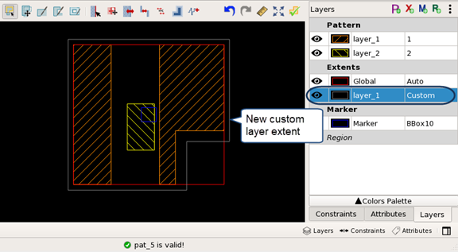

Defining Custom and Per-Layer Extents for a TEM Pattern
You can create a custom or per-layer extent for a TEM pattern using the Calibre Pattern Matching GUI. Custom and per-layer extents enable more control over the region that is matched than is possible with the default extent.
To change the default global extent to a custom extent, double-click the Auto entry and select Custom in the dropdown box. Use the drawing tools to define the extent boundary.

Prerequisites
A pattern library is open in the Calibre Pattern Matching GUI. See “Invoking the Calibre Pattern Matching GUI”.
Procedure
- In the Layers tab
on the right side of the GUI, click the Add Layer Extent button
(
 ).
).This opens the Add Layer Extent dialog box.
- If you added a Custom extent,
draw the extent shape.
With the new extent layer still selected, use one of the drawing tools (
 or
or  ) to draw the custom layer extent.
) to draw the custom layer extent.Defining a custom extent can alter the original pattern, so additional care must be taken to enclose all the desired patterns.
- Click the Check
Pattern button (
 ) to
check that the pattern is valid.
) to
check that the pattern is valid. - Click the
 (Save
Library) button to save the changes.
(Save
Library) button to save the changes.See the following image.
Figure 1. Adding a Custom Layer Extent